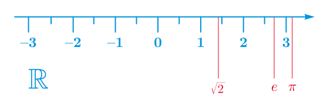

Análisis Matemático
Topología de la recta real
Universidad CEU San Pablo
La recta real
Intervalos y entornos
Definición 1 (Intervalo abierto) Dados dos números reales tales que \(a\leq b\), se llama intervalo abierto de extremos \(a\) y \(b\), y se denota \((a,b)\) al conjunto de números reales comprendidos entre \(a\) y \(b\) \[ (a,b) = \{x\in \mathbb{R}: a<x<b\}. \]
Definición 2 (Intervalo cerrado) Dados dos números reales tales que \(a\leq b\), se llama intervalo cerrado de extremos \(a\) y \(b\), y se denota \([a,b]\) al conjunto de números reales que son mayores o iguales que \(a\) y menores o iguales que \(b\) \[ [a,b] = \{x\in \mathbb{R}: a\leq x\leq b\}. \]
Obsérvese que si \(a=b\), \((a,a)=\emptyset\) y \([a,a]=\{a\}\).
Definición 3 (Intervalo semiabierto o semicerrado) Dados dos números reales tales que \(a<b\), se definen los intervalos semiabiertos o semicerrados de extremos \(a\) y \(b\) de la siguiente manera: \[ (a,b] = \{x\in \mathbb{R}: a< x\leq b\}\quad \mbox{y}\quad [a,b) = \{x\in \mathbb{R}: a\leq x< b\} \]
Definición 4 (Intervalo abierto no acotado) Dado un número \(a\in \mathbb{R}\), se definen los siguientes intervalos abiertos no acotados: \[ (-\infty,a) = \{x\in \mathbb{R}: x<a\} \quad \mbox{y}\quad (a,\infty) = \{x\in \mathbb{R}: a< x\} \]
Definición 5 (Intervalo semiabierto no acotado) Dado un número \(a\in \mathbb{R}\), se definen los siguientes intervalos semiabiertos no acotados: \[ (-\infty,a] = \{x\in \mathbb{R}: x\leq a\} \quad \mbox{y}\quad [a,\infty) = \{x\in \mathbb{R}: a\leq x\} \]
Definición 6 (Intervalos anidados) Se dice que una sucesión de intervalos \(I_n\), \(n\in\mathbb{N}\) es una sucesión de intervalos anidados si se cumple que \(I_{n+1}\subseteq I_n\) \(\forall n\in\mathbb{N}\).
Ejemplo 1 La sucesión de intervalos \(I_n=[0,\frac{1}{n}]\), \(\forall n\in\mathbb{N}\) es una sucesión de intervalos anidados, ya que para cada \(n\in\mathbb{N}\) se cumple que \(n<n+1\) y por tanto \(\frac{1}{n}>\frac{1}{n+1}\), de manera que \(I_{n+1}=[0,\frac{1}{n+1}]\subseteq [0,\frac{1}{n}]=I_n\).
Teorema 1 (Intervalos anidados) Dada una sucesión de intervalos cerrados y anidados \(I_n=[a_n,b_n]\), \(n\in\mathbb{N}\), existe un número \(a\in\mathbb{R}\) tal que \(a\in I_n\) \(\forall n\in\mathbb{N}\). Además, si el ínfimo de las longitudes \(\{b_n-a_n: n\in \mathbb{N}\}\) es \(0\), entonces \(a\) es único, es decir, \(\cap_{n=1}^\infty I_n=\{a\}\).
Definición 7 (Entorno) Dado un número \(a\in \mathbb{R}\), se llama entorno de \(a\) a cualquier intervalo abierto \((a-\varepsilon, a+\varepsilon)\) con \(\varepsilon>0\). El número \(\varepsilon\) se conoce como radio del entorno.
Para cualquier \(\varepsilon>0\) el conjunto \((a-\varepsilon, a+\varepsilon)\setminus \{a\}\) se llama entorno reducido de \(a\).
Clasificación de puntos
Definición 8 (Punto interior) Se dice que \(a\in \mathbb{R}\) es un punto interior de un conjunto \(A\subseteq \mathbb{R}\), si existe un entorno de \(a\) contenido en \(A\), es decir, existe \(\varepsilon>0\) tal que \((a-\varepsilon, a+\varepsilon) \subseteq A\).
El conjunto de los puntos interiores de \(A\) se llama interior de \(A\) y se denota por \(\operatorname{Int}(A)\).
Ejemplo 2 \(0.9\) es un punto interior del intervalo \((0,1)\) ya que podemos tomar \(\varepsilon = 0.01\) tal que el entorno \((0.9-0.01,0.9+0.01) = (0.89, 0.91)\subset (0,1)\).
Sin embargo, \(1\) no es un punto interior del intervalo \((0,1)\) ya que por muy pequeño que tomemos \(\varepsilon>0\), \(1+\varepsilon > 1\) y, por tanto, el entorno \((1-\varepsilon, 1+\varepsilon)\) siempre tendrá valores mayores que 1, de manera que \((1-\varepsilon, 1+\varepsilon)\not \subseteq (0,1)\).
Definición 9 (Punto exterior) Se dice que \(a\in \mathbb{R}\) es un punto exterior de un conjunto \(A\subseteq \mathbb{R}\), si existe un entorno de \(a\) contenido en el complementario de \(A\), es decir, existe \(\varepsilon>0\) tal que \((x-\varepsilon, x+\varepsilon) \subseteq \overline A\).
El conjunto de los puntos exteriores de \(A\) se llama exterior de \(A\) y se denota por \(\operatorname{Ext}(A)\).
Ejemplo 3 \(1.01\) es un punto exterior del conjunto \((-\infty, 1)\) ya que tomando \(\varepsilon=0.001\) el entorno \((1.01-0.001, 1.01+0.001)=(1.009, 1.011)\in \overline{(-\infty, 1)}=[1,\infty)\).
Sin embargo, \(1\) no es un punto exterior del intervalo \((-\infty, 1)\), ya que no es un punto interior del intervalo \(\overline{(-\infty, 1)}=[1,\infty)\), ya que \(1-\varepsilon < 1\) \(\forall \varepsilon>0\), y, por tanto, el entorno \((1-\varepsilon, 1+\varepsilon)\) siempre tendrá valores menores que 1, de manera que \((1-\varepsilon, 1+\varepsilon)\not \subseteq [1,\infty)\).
El que un punto no sea punto interior de un conjunto no significa que sea un punto exterior. Por ejemplo, \(1\) no es un punto interior del intervalo \((0,1)\), y tampoco de su complementario \(\overline{(0,1)}=(-\infty, 0]\cup[1,\infty)\).
Definición 10 (Punto frontera) Se dice que \(a\in \mathbb{R}\) es un punto frontera de un conjunto \(A\subseteq \mathbb{R}\), si cualquier entorno de \(a\) contiene puntos de \(A\) y de su complementario.
El conjunto de los puntos frontera de \(A\) se llama frontera de \(A\) y se denota por \(\operatorname{Fr}(A)\).
Ejemplo 4 El punto \(1\) es un punto frontera del intervalo \([1,\infty)\) ya que no es un punto interior de \([1,\infty)\) ni de su complementario \((-\infty,1)\).
Proposición 1 Todos los puntos de un intervalo abierto son puntos interiores suyos, es decir, dado un intervalo abierto \((a,b)\subseteq \mathbb{R}\), se cumple que \(\operatorname{Int}((a,b)) = (a,b)\).
Proposición 2 Todos los puntos de un intervalo cerrado, excepto sus extremos, son puntos interiores suyos, es decir, dado un intervalo cerrado \([a,b]\subseteq \mathbb{R}\), se cumple que \(\operatorname{Int}([a,b]) = (a,b)\).
A partir de estas proposiciones, es fácil ver que que para cualquier intervalo abierto \((a,b)\), \(\operatorname{Int}((a,b)) = (a,b)\), \(\operatorname{Ext}((a,b)) = (-\infty,a)\cup (b,\infty)\) y \(\operatorname{Fr}((a,b)) = \{a, b\}\). Y para cualquier intervalo cerrado \([a,b]\), \(\operatorname{Int}([a,b]) = (a,b)\), \(\operatorname{Ext}([a,b]) = (-\infty,a)\cup (b,\infty)\) y \(\operatorname{Fr}([a,b]) = \{a, b\}\).
Proposición 3 Dado un conjunto \(A\subset \mathbb{R}\), los conjuntos \(\operatorname{Int}(A)\), \(\operatorname{Ext}(A)\) y \(\operatorname{Fr}(A)\) forman una partición de \(\mathbb{R}\), es decir,
- \(\operatorname{Int}(A)\), \(\operatorname{Ext}(A)\) y \(\operatorname{Fr}(A)\) son disjuntos entre sí.
- \(\operatorname{Int}(A)\cup \operatorname{Ext}(A)\cup \operatorname{Fr}(A) = \mathbb{R}\).
Definición 11 (Punto adherente) Se dice que \(a\in \mathbb{R}\) es un punto adherente de un conjunto \(A\subseteq \mathbb{R}\), si cualquier entorno de \(a\) contiene puntos de \(A\).
El conjunto de los puntos adherentes de \(A\) se llama adherencia de \(A\) y se denota por \(\operatorname{Adh}(A)\).
Resulta obvio que cualquier punto interior y frontera de un conjunto es también adherente, y que cualquier punto exterior no es adherente. Resulta evidente también que cualquier punto de un conjunto es un punto adherente, de manera que para cualquier conjunto \(A\) se tiene \(A\subseteq\operatorname{Adh}(A)\).
Definición 12 (Punto de acumulacion) Se dice que \(a\in \mathbb{R}\) es un punto de acumulación de un conjunto \(A\subseteq \mathbb{R}\), si cualquier entorno reducido de \(a\) contiene puntos de \(A\).
El conjunto de los puntos de acumulación de \(A\) se llama conjunto derivado de \(A\) y se denota por \(\operatorname{Ac}(A)\).
Resulta obvio de la definición que cualquier punto de acumulación es también un punto de adherencia, es decir, \(\operatorname{Ac}(A)\subseteq \operatorname{Adh}(A)\) para cualquier conjunto \(A\subset \mathbb{R}\). Sin embargo no todo punto de adherencia es un punto de acumulación.
Es posible que un conjunto tenga puntos de acumulación que pertenezcan al conjunto y otros que no.
Ejemplo 5 Dado el conjunto \(A=(0,1) \cup \{2\}\), se tiene que \(2\) es un punto de adherencia de \(A\), pues para cualquier \(\varepsilon>0\) el entorno \((2-\varepsilon,2+\varepsilon)\) contiene al propio \(2\) que es un punto de \(A\). Sin embargo, \(2\) no es un punto de acumulación, porque para \(\varepsilon=0.5\), por ejemplo, el entorno reducido \((2-\varepsilon,2+\varepsilon)\setminus\{2\}=(1.5,2)\cup(2,2.5)\) no contiene puntos de \(A\).
En cambio el punto \(0.5\) es tanto un punto de adherencia como un punto de acumulación de \(A\) porque para cualquier \(\varepsilon>0\) el entorno reducido \((0.5-\varepsilon,0.5+\varepsilon)\setminus \{0.5\}\) siempre contiene puntos de \(A\). De hecho, para cualquier \(x\in(a,b)\) y para cualquier \(\varepsilon>0\), el intervalo \((x-\varepsilon,x+\varepsilon)\setminus \{x\}\) contiene puntos de \(A\), y lo mismo ocurre para \(a\) y \(b\) al ser puntos frontera, de manera que \(\operatorname{Ac}(A)=[0,1]\), mientras que \(\operatorname{Adh}(A)=[0,1]\cup\{2\}\).
Definición 13 (Punto aislado) Se dice que \(a\in \mathbb{R}\) es un punto de aislado de un conjunto \(A\subseteq \mathbb{R}\), si es un punto adherente de \(A\), pero no de acumulación.
Proposición 4 Para cualquier intervalo abierto \((a,b)\) se tiene que \(\operatorname{Adh}((a,b))=\operatorname{Ac}((a,b))=[a,b]\).
Proposición 5 Para cualquier conjunto \(A\subseteq \mathbb{R}\), se tiene que \(\operatorname{Adh}(A)=A\cup \operatorname{Ac}(A)\).
Conjuntos abiertos y cerrados
Definición 14 (Conjunto abierto) Se dice que un conjunto \(A\subset \mathbb{R}\) es abierto cuando para cada \(a\in A\) existe un entorno de \(a\) contenido en \(A\), es decir, existe \(\varepsilon>0\) tal que \((a-\varepsilon, a+\varepsilon)\subset A\).
Obsérvese que un conjunto es abierto si todos sus puntos son interiores.
Ejemplo 6 Cualquier intervalo abierto \((a,b)\) es un conjunto abierto, ya que según se vio en la Proposición 1 \(\operatorname{Int}((a,b)) = (a,b)\). Por otro lado, un intervalo cerrado \([a,b]\) no es un conjunto abierto pues cualquier entorno de \(a\) o \(b\) no está contenido en \([a,b]\).
Una colección de conjuntos abiertos se llama topología y cualquier propiedad que pueda definirse en términos de conjuntos abiertos se llama propiedad topológica.
Definición 15 (Conjunto cerrado) Se dice que un conjunto \(A\subset \mathbb{R}\) es cerrado cuando su complementario \(\overline A =\mathbb{R}\setminus A\) es abierto.
Ejemplo 7 Todo intervalo cerrado \([a,b]\) es cerrado, pues su complementario \((-\infty,a)\cup (b,\infty)\) es abierto.
Un subconjunto puede ser abierto y cerrado a la vez, como por ejemplo \(\mathbb{R}\) y \(\emptyset\). \(\mathbb{R}\) es abierto ya que todos sus puntos son interiores, y por tanto \(\overline{\mathbb{R}}=\emptyset\) es cerrado. Pero, también \(\emptyset\) es abierto, ya que para que un conjunto no sea abierto, al menos uno de sus puntos no debe ser interior, y en consecuencia \(\overline{\emptyset}=\mathbb{R}\) es también cerrado.
Un subconjunto también puede no ser abierto ni cerrado, como por ejemplo \((a,b]\), ya que \(b\) no es un punto interior de \((a,b]\), y \(a\) no es un punto interior de \(\overline{(a,b]}=(-\infty,a]\cup (b,\infty)\). Por tanto, no abierto no implica cerrado y no cerrado no implica abierto.
Proposición 6 Se cumplen las siguientes propiedades:
- La unión de una colección de conjuntos abiertos es un conjunto abierto.
- La intersección de una colección finita de conjuntos abiertos es un conjunto abierto.
- La intersección de una colección de conjuntos cerrados es cerrada.
- La unión de una colección finita de conjuntos cerrados es un conjunto cerrado.
La intersección de una colección infinita de conjuntos abiertos puede no ser un conjunto abierto, como por ejemplo la colección de conjuntos \(I_n=(0,1+\frac{1}{n})\), \(n\in\mathbb{N}\), ya que \(\cap_{n=1}^\infty I_n=(0,1]\).
Y la unión de una colección infinita de conjuntos cerrados puede no ser cerrada, como por ejemplo la colección de conjuntos \(J_n=[\frac{1}{n},1]\), \(n\in\mathbb{N}\), ya que \(\cup_{n=1}^\infty J_n=(0,1]\).
Teorema 2 (Existencia del máximo y mínimo) Cualquier conjunto no-vacío, cerrado y acotado superiormente tiene un máximo, y cualquier conjunto no-vacío, cerrado y acotado inferiormente tiene un mínimo.
Teorema 3 (Bolzano-Weierstrass) Todo subconjunto infinito de \(\mathbb{R}\) acotado tiene al menos un punto de acumulación.
Teorema 4 Cualquier subconjunto de \(\mathbb{R}\) es cerrado si y sólo si contiene a todos sus puntos de acumulación.